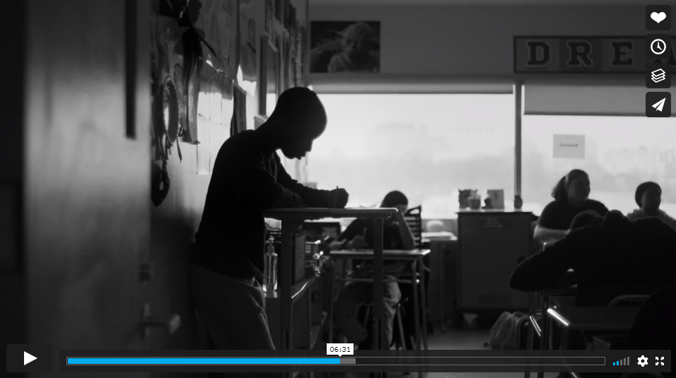
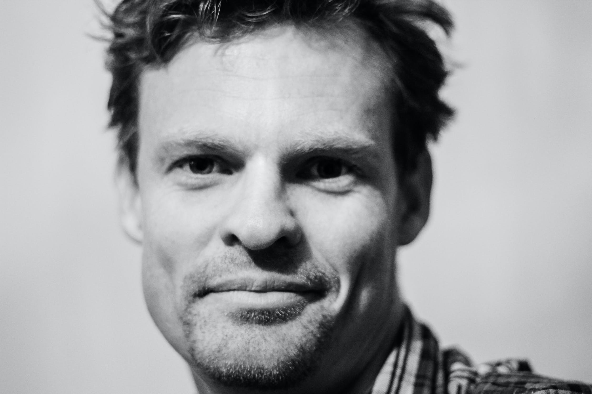

Análise sensorial de preparações funcionais desenvolvidas para escolares entre 09 e 15 anos, do município de Campinas/SP
Análise sensorial de preparações funcionais desenvolvidas para escolares entre 09 e
15 anos, do município de Campinas/SP
Beatriz Christiane Melo
FCA / Universidade Estadual de Campinas
